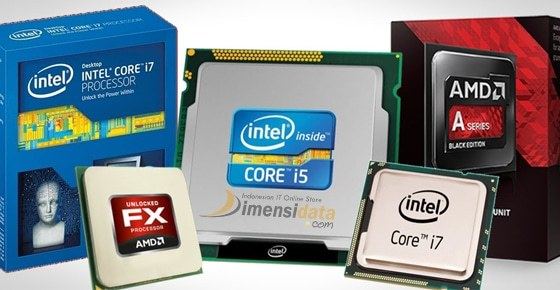

Laptop Gaming Terbaik
Asus ROG GZ700GX-I9R81T i9-9980H (ROG Mothership)
Dengan harga di angka Rp 120 jutaan, Asus ROG Mothership adalah laptop gaming terbaik lainnya yang kami rekomendasikan di daftar ini. Sesuai dengan harga jualnya, produk ini hadir dengan parameter terbaik untuk pengalaman bermain game terbaik pula.Baca selengkapnya ...

Acer Predator Triton 900 i9-9980HK
Solusi untuk merasakan pengalaman bermain game yang hebat juga datang dari Acer Predator Triton 900. Laptop yang satu ini bisa Anda dapatkan di bawah Rp 100 juta, tepatnya di kisaran Rp 70-80 jutaan. Salah satu fitur unggulan yang ditawarkan oleh laptop gaming yang satu ini adalah monitor yang dapat disesuaikan. Hal itu memudahkan Anda untuk menentukan sudut pandang saat bermain game.Baca selengkapnya ...

Prosesor adalah unit dalam komputer yang bisa dibilang sebagai otak dari komputer. Hal ini karena fungsinya yang menjadi pusat dari keseluruhan operasi dari perangkat komputer tersebut. Segala proses olah perintah dimulai dari bagian ini.
Baca selengkapnya ...
10 Rekomendasi Prosesor PC/Komputer Terbaik
Prosesor adalah unit dalam komputer yang bisa dibilang sebagai otak dari komputer. Hal ini karena fungsinya yang menjadi pusat dari keseluruhan operasi dari perangkat komputer tersebut. Segala proses olah perintah dimulai dari bagian ini.
Baca selengkapnya ...